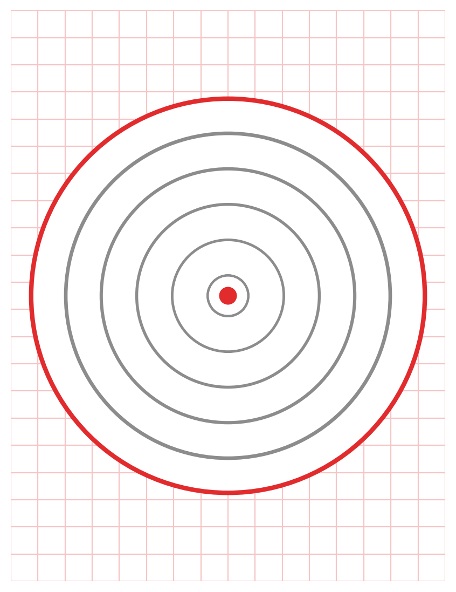
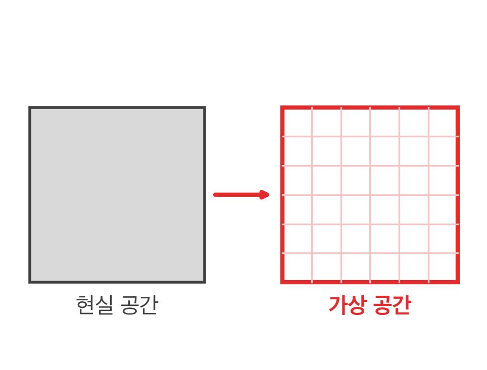
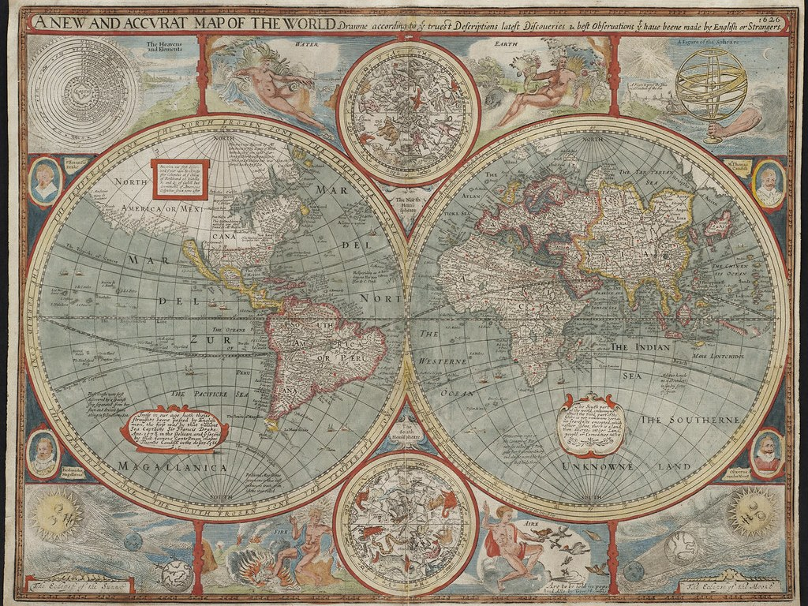
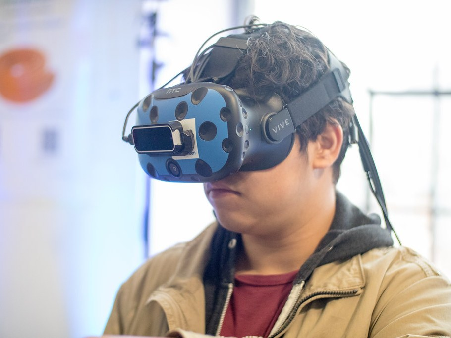

12
데이톨로지 — 데이터로 읽는 인간과 사회
주교재: 김성태, 『데이톨로지』 2부 · 연재 ② · 강사 : ○○○

CONTENTS

목표 1
인류의 공간 확장 욕망이라는 역사적 틀로 메타버스 해석
목표 2
디지털 트윈·존재감 개념 설명, 유토피아/디스토피아 논쟁 평가
오늘의 질문
인류 역사의 대부분은 전쟁, 원인은 대개 땅
그렇다면 새로운 땅, 가상공간은 평화를 가져올까?
[비유] 옛 세계지도

사진: Norman B. Leventhal Map Center at the BPL / CC BY 2.0
유목 → 장원 → 신대륙 → 서부 개척 → 마천루·우주 → 사이버스페이스
[비유] VR 헤드셋

사진: Ivan Radic / CC BY 2.0
2003~2020 메타버스 연표와 로블록스 이용자
2021년 칼럼이 주목한 사례
| 사례 | 내용 |
|---|---|
| 바이든 캠프 (2020 대선) | 닌텐도 ‘동물의 숲’에서 선거 캠페인 |
| BTS × 포트나이트 (2020.9) | 게임 속 콘서트장에서 신곡 무대 공개 |
| 홀로렌즈2 (MR) | 환자 치료 과정에 혼합현실 활용 가능성 |
| 디센트럴랜드 | 블록체인 기반, 가상 토지 소유권·거래 공개 |
| 젠슨 황 (엔비디아) | “이제는 메타버스의 세상이 됐다.” |
클라우스 슈밥: 포스트 코로나 = “위대한 리셋(The Great Reset)”
[비유] 호수에 비친 반영
사진: Bonnie Moreland / Public Domain Mark
현실의 데이터 → 디지털 트윈 → 시뮬레이션 → 현실의 결정
[비유] 숲속 갈림길
사진: Wonderlane / CC BY 2.0
야누스의 결론: 과학기술의 두 얼굴
예측의 유통기한: 2021년 칼럼을 5년 뒤에 읽기
2021 · 칼럼 시점
2026 · 지금
변하지 않은 것
활동 (60분): 메타버스 찬반 토론
논제
근거 찾기 · 20분
토론·판정 · 40분
오늘의 핵심 4줄
메타버스 = 공간 확장 욕망 + 디지털 기술의 결과
어원 = meta + universe, 『스노 크래시』(1992)
디지털 트윈 = 현실과 거의 같은 디지털 쌍둥이
결론 = 야누스의 두 얼굴, 유토피아/디스토피아는 선택의 문제
확인 문제
‘메타버스’라는 말의 구성과 처음 등장한 작품
로블록스 이용자가 2017년 3,500만 → 2020년 1억 5,000만일 때, 대략 몇 배 증가
저자가 단테·버트하임을 인용해 메타버스에 붙인 경고
마무리
2029년, 특이점은 올 것인가
사진 (Openverse 검색, CC 라이선스)